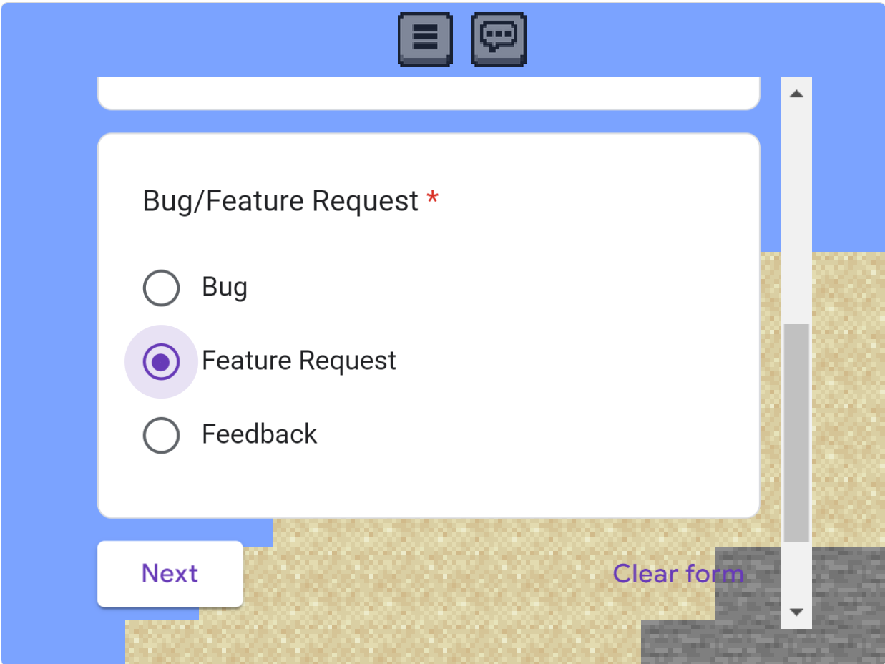

Version 24w21a Changelog
24w21a brings many additions, UI changes, and bugs fixed.

Test the latest version Test it!
Additions
- New (hidden) functions for Density Function used in world generation
- GUI
- Button (3 lines) to access the bug reporter in-game
- Mobile chat button for commands
- If username is "19gamesac", and the "u" key is pressed, an easter egg of how long the project has been in development for, as a play test has been added
- Sky colour now changes slightly to match the biome
Changes
- Made block selection indicator disappear after 4 blocks
- Backend for new density functions beginning
- Seagrass is now waterlogged upon world generation
- Ocean decorations will not generate above sea level (e.g. kelp, seagrass)
- Player automatically starts swimming when underwater (this is a bug, it will be removed in a future release)
- Biomes are sampled only from the x position
Removals
- Unused center of hitbox check
Known Bugs
- Player can spam down key to phase up vertical walls
- Player automatically starts swimming when underwater
Bugs Fixed
- [MCSE-06] When the player is in spectator, and the down arrow is pressed, the arm moves downwards
- [MCSE-02] Waterlogged blocks don't allow swimming movement -> they act as normal transparent blocks
- [MCSE-03] Water isn't animated anymore
- [MCSE-05] Empty chat box still makes speech bubble, even when its empty
- [MCSE-08] Seagrass isnt waterlogged upon generation, underwater
- Ability to phase up blocks whilst crawling, then uncrawling
- Player doesnt face the mouse cursor
- Block selection indicator is not opaque